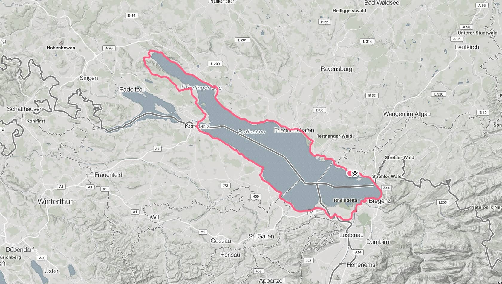
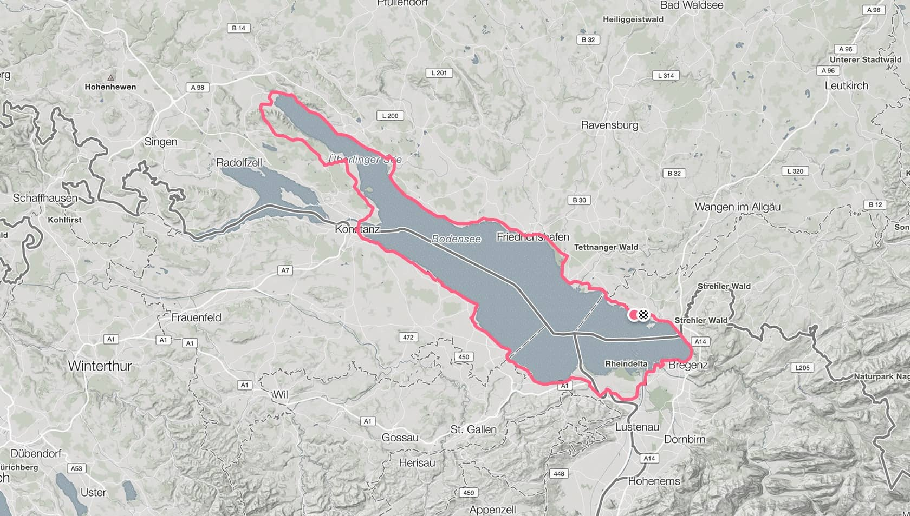
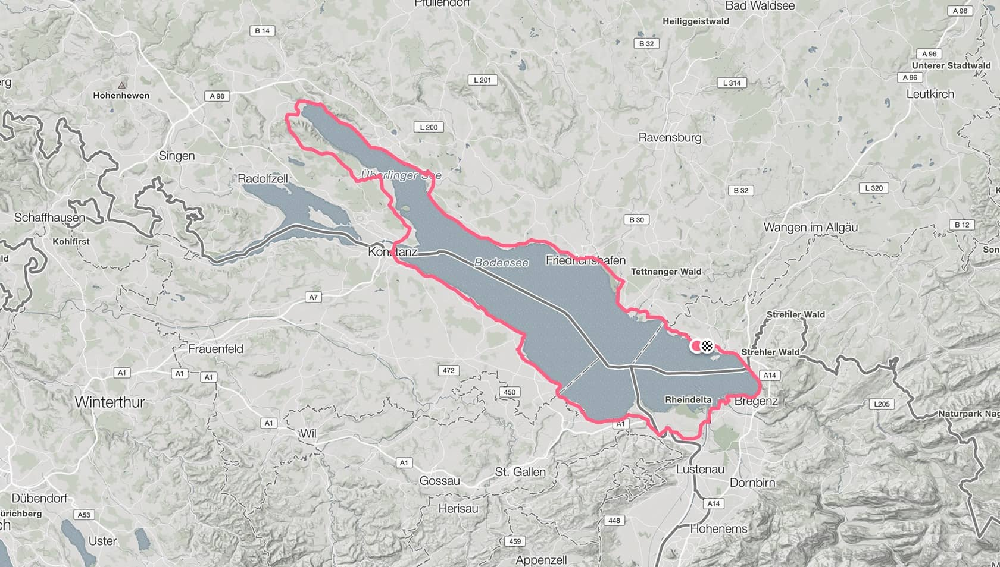
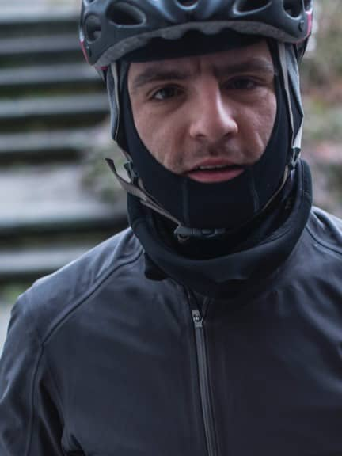
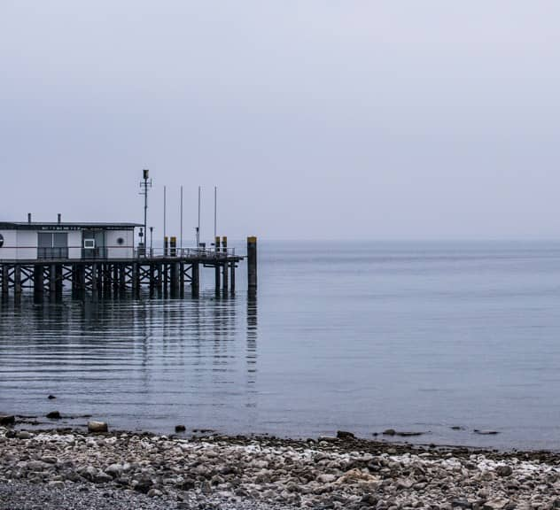
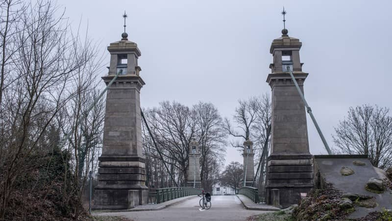
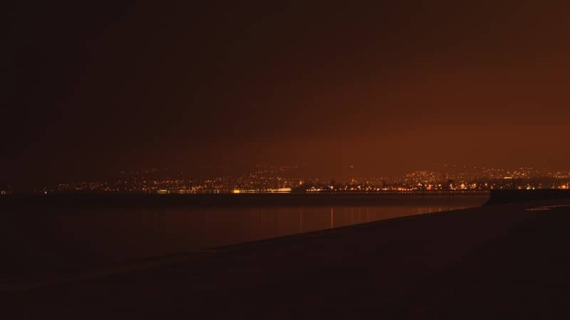

30. Dec 2016
Lindau
Lindau
Distance
175,5 km
Altitude
823 m
Calories
1982 kcal
 


Lindau
Lindau
Distance
175,5 km
Altitude
823 m
Calories
1982 kcal

The beginning and the end is the same. Everything returns to its point of origin. Only time invested makes us wise and strong.
 The Rhine River has been very present in my journey. Originally the idea was to go in direction against the water, against the elements, against the cold in the face and against the darkness of a short winter day.
The river coming from the Alps takes a rest forming the Lake Bodensee, where Germany is sharing border with Austria and Switzerland. A region rich in culture and a paradise for cyclists.
That’s why the plan for the third day of my Rapha500 was to encircle the lake and passing through these three countries departing from Lindau in Germany.
With a constant temperature of -2 degrees throughout the day, it was the day when I began to feel the first pain in my knees and above all for the first time thinking of the cold as a annoying travel companion.
During the journey, just before arriving at Langenargen, one can admire the oldest suspension bridge of Germany completed in 1898.
In general I consider the cycle path at the german side of the lake not as exciting as the one in Switzerland or Austria, as it is not directly next to the lake, but rather more inside to the countryside, losing eye contact with the Bodensee.
The route however is relatively simple refering to the hight as there are no great ups and downs, with the exception that passing Bodman village the route climbs suddenly 210 meters within the next 10 kilometers.
Up at the mini-summit small market stalls offer you fresh fruits from the region, ideal for a short break. The following the 20 kilometers were a little relieve for my legs as I was only going downhill.
Passing and leaving the city of Konstanz, I immediately entered the Swiss side of the lake, where the light was slowly fading out, enjoying the loneliness and the distant twinkling lights of cities like Arbon or Bregenz.
As about 20:00 I was already passing the border of Switzerland and Austria, where the Alter Rhein River forms a natural border.
Following the road and finally passing through Bregenz city, I was already back in Germany at about 21:00 and finishing the 175.7 km in Lindau.
go to day 04